Automated Tic Tac Toe Board
2.5 Degrees of Freedom Final Project
Design Objectives: The objective of this project was to design and implement a 2.5 degree-of-freedom (DOF) system capable of fully automating a game of tic-tac-toe. The system DOF configuration consisted of two translational degrees of freedom enabling planar (X–Y) positioning, and an additional half degree of freedom corresponding to a vertical (Z-axis) pick-and-place mechanism for discrete piece manipulation.
Prototype Design: All components of the automated tic-tac-toe system were designed using
SolidWorks CAD software. A primary design constraint during the development phase was the available stock
length of 80/20 aluminum extrusions. The assembly was therefore dimensioned to accommodate two 11-inch extrusions
and one 12-inch extrusion, with the overall system geometry defined accordingly to ensure efficient material utilization
and structural compatibility.
The first components to be designed were fittings between the 80/20 aluminum and the pin and stepper motor tp form one linear axis.
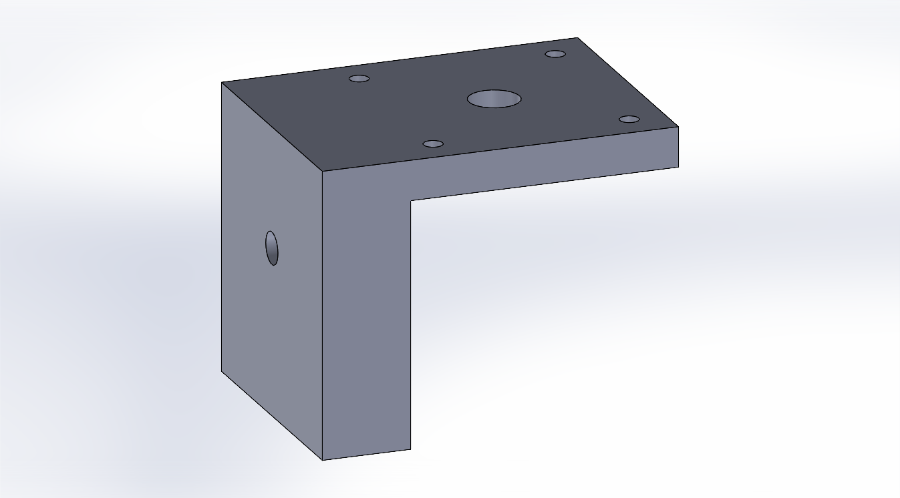
Figure X: Motor holder for x-axis linear slide assembly.
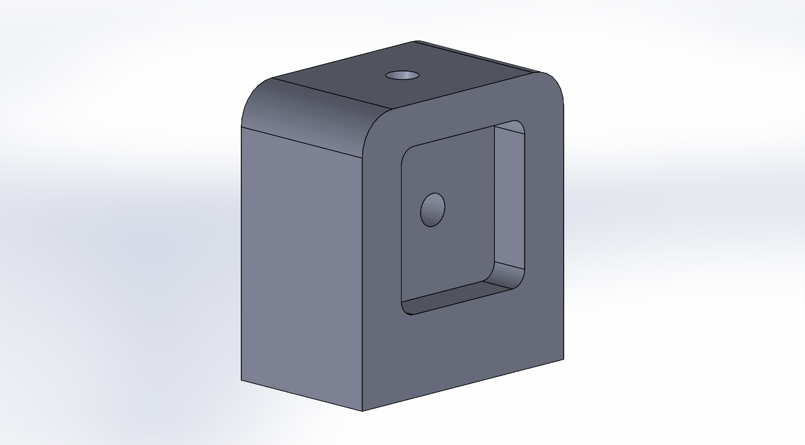
Figure X: Pin holder for x-axis linear slide assembly.
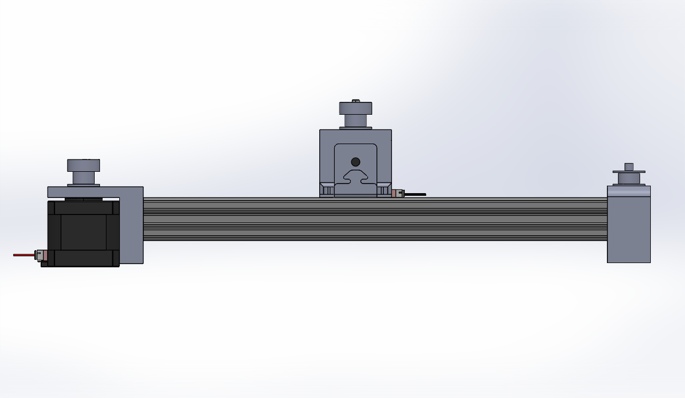
Figure 4: X-axis linear motion slider.
X-Axis Linear Slider Integration: Following development of the primary axis, the secondary planar (X-axis) slider assemblies were constructed. A key design consideration during this phase was maintaining precise horizontal alignment of the timing belt mounting features. Initial iterations exhibited misalignment, necessitating successive design refinements to ensure proper belt tracking and minimize off-axis loading. The slider assemblies were designed to interface directly with 80/20 aluminum extrusion profiles, enabling modular assembly and disassembly of the system. This approach improved structural alignment, facilitated rapid iteration, and allowed for straightforward integration of additional components within the overall frame.
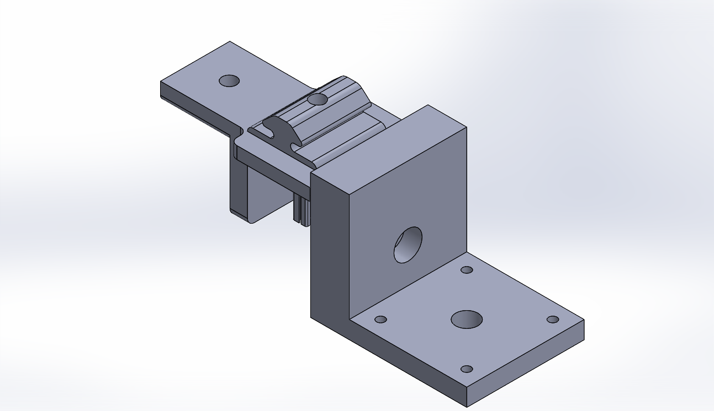
Figure X: Motor holder for x-axis linear slide assembly.
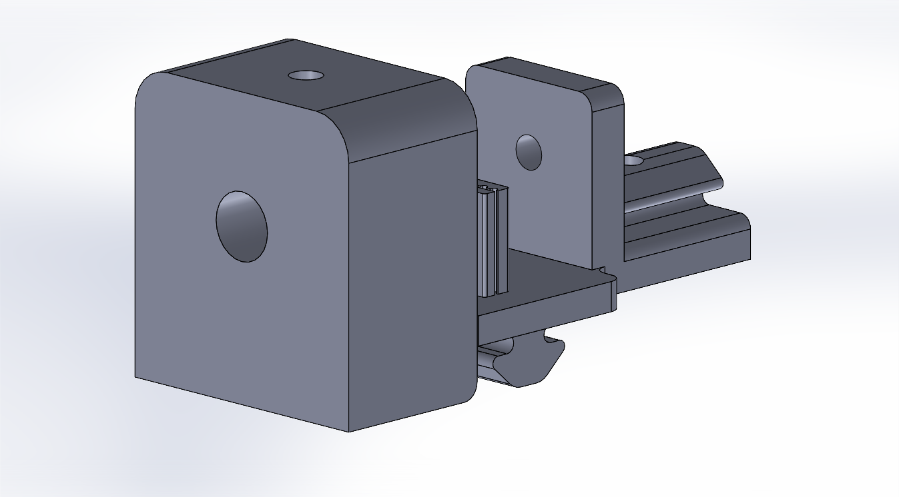
Figure X: Pin holder for x-axis linear slide assembly.
Y-Axis Linear Slider Design: The Y-axis linear slider was developed using a modular design approach to facilitate manufacturability and assembly. Initial prototyping revealed that printing the integrated timing belt profile resulted in poor feature resolution due to unsupported overhangs during the additive manufacturing process. To address this limitation, the slider was redesigned to incorporate fixture-based interfaces, enabling the component to be fabricated as modular subassemblies with improved print orientation and structural integrity. In addition, a rack-and-pinion transmission system was implemented to provide the half degree of freedom associated with vertical (Z-axis) motion. This mechanism enabled controlled linear displacement of the end effector, allowing for discrete pick-and-place functionality within the overall 2.5 DOF system.
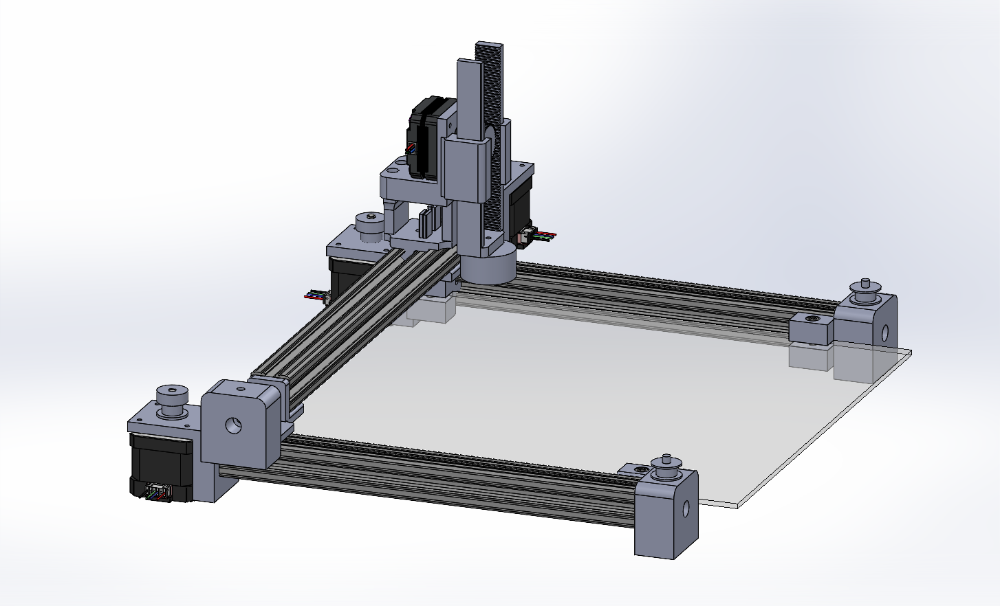
Figure 4: Complete 2.5 DoF system assembly.
Assembly Process: The assembly of the automatic tic-tac-toe machine proved exceedingly manageable as a result of adequate computer aided design considerations. All 3D printted mouting components were attached to NEMA-17 motors using M4 metric screws (attached by threading the 3D prints), and mounts to the 80/20 aluminum through 1/4"-20 sockethead screws. The tic-tac-toe board was laser cut from MDF board due to availability in EPIC. Mounting fixtures for attachment of the board to the aluminum frame were printed and implimented into design. Mount lifts and a Chassis for the Arduino Mega ADK board were also laser cut from MDF.
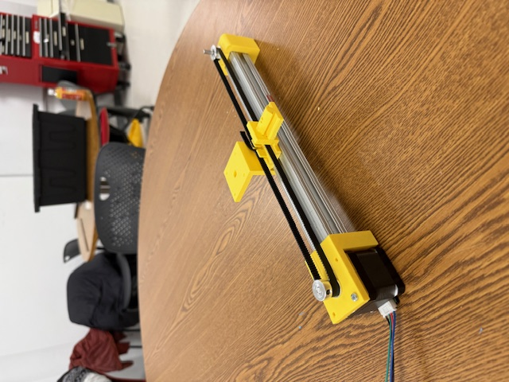
Figure X: Assembled X-Axis slider.
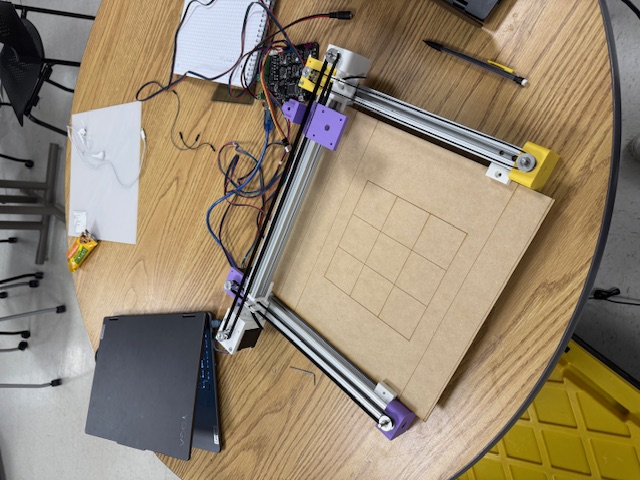
Figure X: Preliminary board assembly.
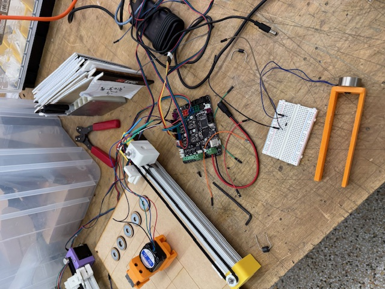
Figure X: Assembly and wiring of Z-axis actuator.
Electromagnet Integration: A 5 V DC electromagnet was implemented as the primary end-effector for piece manipulation within the automated tic-tac-toe system. The electromagnet was driven via the FAN MOSFET output of the Arduino Mega ADK running Marlin firmware, enabling PWM-controlled on/off actuation. As the electromagnet constitutes an inductive load, a flyback diode (1N4007) was installed in parallel with the coil, with the cathode connected to the supply (FAN+) and the anode connected to the switching node (FAN−). This configuration suppresses voltage transients generated during switching and protects the onboard MOSFET from inductive kickback.
Figure 4: Circuit diagram for electromagnet integration.
Code Integration: System control was implemented in MATLAB via a serial communication interface with the Arduino Mega ADK running Marlin firmware. MATLAB scripts were used to transmit G-code commands governing X–Y positioning and Z-axis actuation, while auxiliary commands were issued to control the electromagnet through the FAN MOSFET output. This architecture enabled coordinated pick-and-place operations by synchronizing motion commands with discrete magnet actuation, resulting in automated execution of tic-tac-toe gameplay.
Final Results: A 2.5 degree-of-freedom (DOF) system capable of autonomously executing and resetting a game of tic-tac-toe was successfully developed. Using calibrated positional data derived from the SolidWorks assembly and G-code command execution via Marlin firmware, the system achieved a high degree of positional accuracy and repeatability across all tested scenarios. Additionally, a MATLAB-based user interface was implemented to enhance system usability and enable interactive control of gameplay operations.
Figure X: Caption for video one.
Figure X: Caption for video two.
Plotter Excersise
2.5 Degree of Freedom Practice
Design Objectives: The goal of this in class-activity was to construct a 2.5 degree of freedom system capable of drawing approproatley vectorized images. The primary design objective was to translate the rotational motion of a stepper motor to linear motion along specified axes, and to integreate 3d printing software and approproate firmware to allow for graphics plotting.
Linear Actuator Construction: Linear actuators were implemented using NEMA-17 stepper motors coupled to a lead screw mechanism to achieve rotary-to-linear motion conversion. The carriage and supporting structure were fabricated from polystyrene board. A threaded rod interfaced with a fixed nut adhered to the carriage, such that motor rotation induced linear translation of the carriage along the screw axis, enabling precise position-controlled actuation.

Figure 4: Construction of single linear actuator for plotter excersise.
System Integration: A 2.5 degree-of-freedom (DOF) system was achieved through the integration of two full-DOF linear actuators and one half-DOF actuator. The planar (X–Y) motion was implemented using two orthogonally oriented linear stages, each driven by NEMA-17 stepper motors and controlled via the X and Y driver outputs of an Arduino Mega ADK running Marlin firmware. The additional half degree of freedom corresponding to vertical (Z-axis) motion was implemented using the E0 driver port, repurposed to actuate a pen-lift mechanism. This mechanism utilized a rack-and-pinion transmission to convert rotational motion of the stepper motor into vertical displacement of a Sharpie pen. The resulting system enabled precise planar positioning with discrete pen engagement, consistent with 2.5 DOF operation.
Software Infrastructure: Repetier-Host 3D printing software was utilized to interface with an Arduino Mega ADK running Marlin firmware. Vectorized image data was converted into G-code using external preprocessing tools, enabling compatibility with the Repetier-Host control environment and subsequent interpretation by the onboard motion controller. Through the definition and calibration of an appropriate coordinate frame and origin within the experimental setup, the generated toolpaths were accurately mapped to the physical workspace. This calibration enabled precise reconstruction of the original vectorized images using the plotter system.
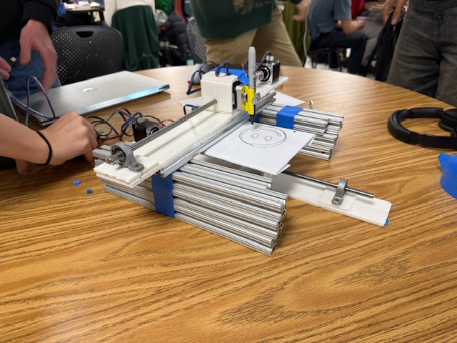
Figure X: Plotter excersie system set-up, view 1.
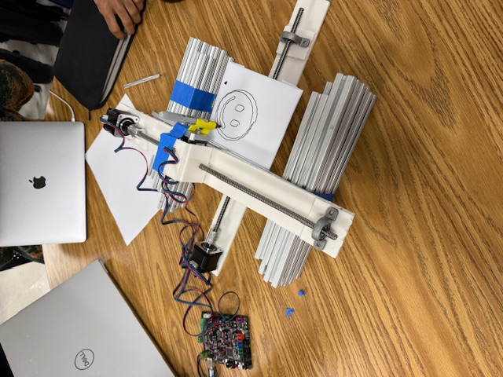
Figure X: Plotter excersie system set-up, view 2.
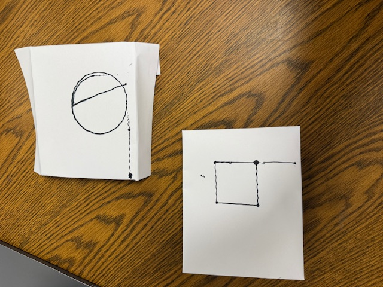
Figure X: Plotter excersise result graphics.
Closed Loop Motor Control
Solidworks Motion Analysis
Design Objectives: The goal of this closed-loop motor control analysis project was to determine the maximum acceleration of a DC motor–controlled cart over a defined distance and to complete a full oscillation between positions in the minimum possible time. The first step in this analysis was the design and simulation of the cart.
Acceleration and Displacement Profile Calculations: The acceleration of the cart was determined through kinematic free-body diagram analysis. The symbolic results of this analysis were compiled into a MATLAB script that converts the system’s physical and geometric parameters (track length, wheel diameter, etc.) into the corresponding maximum motor RPM and time segments of acceleration required to achieve the desired displacement profile. The resulting script was used to generate the motion profile for the system. See the code provided below for implementation details. A prototype cart was subsequently constructed to verify the analytical and computational results. The tipping acceleration of the cart was determined as the condition at which the reaction force on the tipping side of the cart approaches zero. A simulation of the cart motion is provided in the video below.
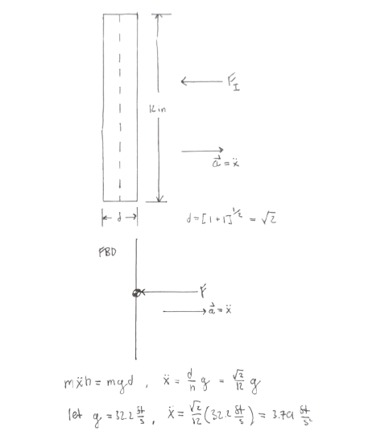
Figure 1: Tipping Acceleration FBD Analysis.
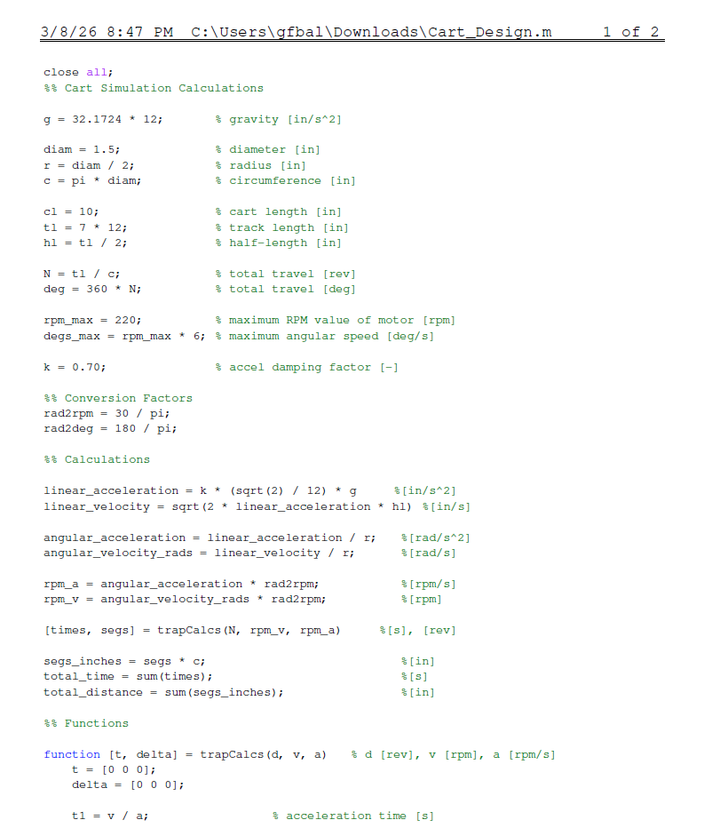
Figure 2: Matlab Computational Code Page 1.
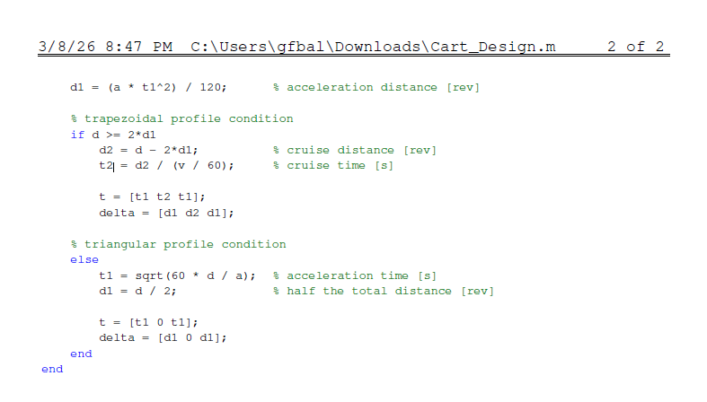
Figure 3: Matlab Computational Code Page 2.
Simulation Challenges and Design Choices The prototype cart incorporated several key design decisions. A wheel diameter of 1.5 inches was selected in order to evaluate performance under small-diameter wheel conditions. Teeth were added to the prototype wheel to increase friction at the wheel–floor interface and improve traction on the linoleum surface. Motor blocks were incorporated into the design to verify sufficient wheel clearance and ensure proper alignment of the drivetrain. Additionally, the bar was oriented along its diagonal to permit a greater allowable acceleration, as illustrated in the free-body diagram shown in Figure 1.
Several issues arose during the SolidWorks multibody simulation. The primary issue encountered was noise in the Linear Acceleration vs. Time and Reaction Force vs. Time plots when motion was applied using the “Segments” option. To mitigate this behavior, a ramp function was applied to the cart’s velocity profile in order to produce continuous results and eliminate outlier data.
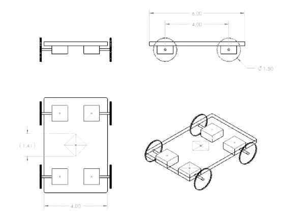
Figure 4: Prototype Cart Assembly Mechanical Drawing.
Additional difficulties were encountered when defining the mates connecting the bar to the cart. These issues were resolved by correctly applying a point-to-plane mate at the tipping point of the bar, which ensured the appropriate constraint and allowed the mechanism to rotate freely about the intended contact point. The resulting graphical representations of reaction force and linear acceleration are provided below. The record time of traversing a 8 foot track was found to be 6.33 seconds.
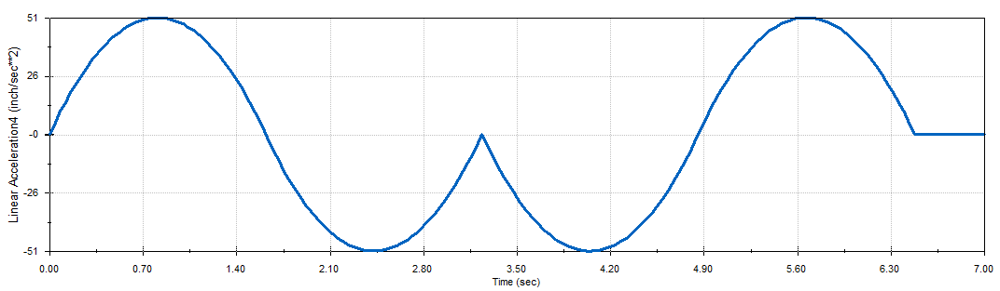
Figure 5: Linear Acceleration vs Time for MATLAB Motion Analysis.
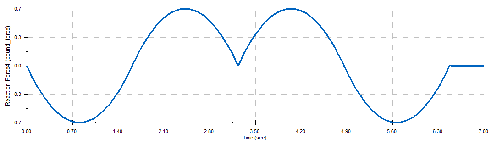
Figure 6: Reaction Force vs Time for MATLAB Motion Analysis.
Cart Prototype and Control Implimentation
Control Code Implementation: The Arduino code was developed to implement the trapezoidal displacement profile computed during the analytical calculations. Physical system parameters such as track length, wheel diameter, experimentally measured motor speed, and allowable acceleration were incorporated directly into the code. These values were used to compute the time segments of acceleration, constant velocity, and deceleration required to complete the motion.
Encoder feedback was used to continuously measure cart position, allowing the controller to compare the measured position with the reference displacement profile. A proportional controller then converted the resulting position error into a PWM motor command, driving the cart along the desired trajectory. Once the forward motion was completed within the specified encoder tolerance, the motor direction was reversed and the same motion profile was applied to return the cart to its starting position.
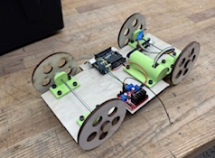
Figure 4: Finalized Cart Prototype with 3D Printed Adapters. Note Video Still Pending.
Container Challenge Linkage Project
Design Objectives: The objective of this project was to design and construct a four-bar linkage mechanism to function as an automated waste-dispensing system. Primary design constraints included maintaining all pivot points within the supporting structure and limiting the coupler link rotation to a maximum of 45° to prevent material spillage. Ultimately, the goal of this assignment was to gain hands-on experience with kinematic analysis software and to develop familiarity with Grübler’s criterion for determining degrees of freedom.
Kinematic Analysis: The initial objective of this assignment was to model the given problem statement in a two-dimensional kinematic simulator, specifically Math Illustrations. Using the provided problem parameters, the initial and final positions of the coupler were defined and analyzed. Due to the incompatibility of perpendicular bisector theory with the full coupler endpoints, connection points were instead defined using variable references, and an intermediate position for these points was developed, as shown in the figure below. Pivot point locations were determined by the intersection of the perpendicular bisections between the start, intermediate, and final positions of the tray. Distances a and b were determined to provide sufficient clearance for the coupler and to position the crank arm beyond the coupler’s center of gravity in order to avoid misconfiguration caused by a geometric singularity during collinearity of the crank and rocker links. Relevant dimensions of the system are presented in the table below.
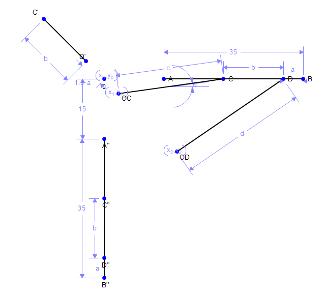
Linkage Geometry Parameters
| x (in) | y (in) | |
|---|---|---|
| OC | 3.6234228 | -3.6234228 |
| OD | 18.293621 | -18.293621 |
| c | 26.624294 | — |
| d | 32.371087 | — |
| b | 15 | — |
| a | 5 | — |
Solidworks Motion Analysis: Once calculated in Math Illustrations, the linkages were constructed in SolidWorks. Members were defined with a thickness of 1.5 inches, half of which was applied as offset distances to the calculated pivot locations to ensure proper motion clearance and alignment. Two revolute hinge joints, one concentric joint, and one spherical joint were implemented to achieve a Grübler count of one degree of freedom. SolidWorks Motion Analysis was then used to compute the trajectory of the coupler endpoints.
Four Bar Linkage Tutorial
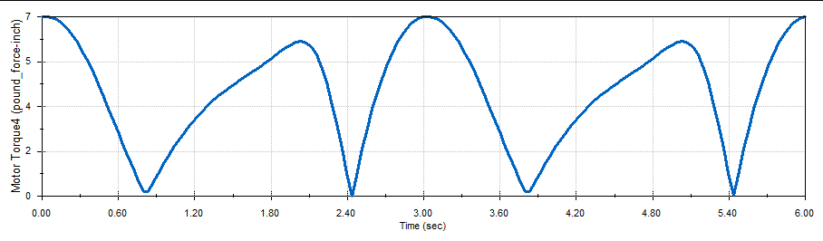
Figure 1: Motor torque as a function of time for a crank speed of 20 RPM, as computed using SolidWorks Motion. The maximum motor torque value is 7 [lb-in], and maximum torque occurs when the crank is at a 90 Degree angle to the fixed link.
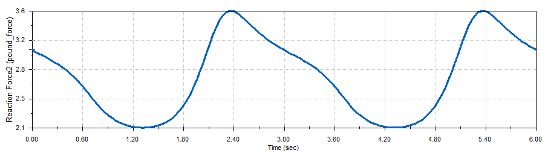
Figure 2: Graphical representation of the reaction force at the bearing–crank linkage interface. The maximum reaction force is 3.6 [lbf].
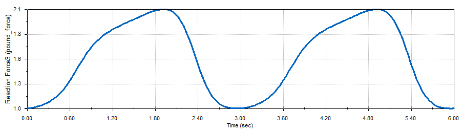
Figure 3: Graphical representation of the reaction force at the bearing–rocker linkage interface. The maximum reaction force is 2.1 [lbf].
The equation for motor power is presented as follows. P (hp) = T (lb·in) × N (rpm) / 63025. Figure 1 indicates the maximum torque of the motor is 7 pound force per inch, and the desired angular velocity is 600 RPM. As such, the equation presented above may be solved such that P (hp) = 7.1 (lb·in) × 600 (rpm) / 63025 = 0.0676 hp.
Negative values of motor torque indicate that the mechanism is driving the motor during certain ranges of motion; in order to maintain a constant angular speed, the motor must apply an opposing (braking) torque to slow the mechanism down. Such effects most commonly result from gravitational and inertial forces acting at the centers of mass of the linkage arms, which can produce acceleration in the direction of motion.